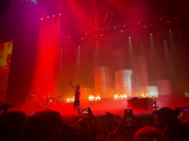
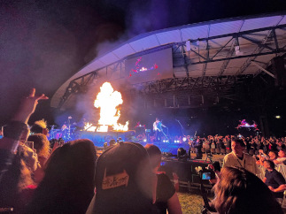

Twenty One Pilots, where do I even begin? I have followed this band for over a decade now, and I am yet to get bored with their music. The introduction to their album, Blurryface intrigued 8-year-old me; it made me do a deep dive on the band and find all their stuff prior to that album. Let's just say, I fell in love. Their sound is very experimental as they don't stick with a specific genre, which makes their songs different from one another. The love for the band prompted me to see them live not once but four different times.
The Bandito Tour (2018-19)
I saw two shows from this era, and both were an amazing experience. In both shows, they played in the Capital One Arena in Washington, DC. It was thrilling to see them play their 2018 album, Trench, live. That album made me fall deeper in love wth them. Blurryface was the first chapter of the Blurryface story. While that album didn't have a lot of songs talking about the "lore," it set up Trench to dive deeper into the plot and setting of the story. My biggest memory from this time was that there was a lot of fire, and the fan interaction was through the roof. It felt as if every song was the fan's favorite as they would erupt into singing with every song that they played. This Album was the Band's biggest hit, as it also made them more mainstream and introduced many to the story told. This Era will always be my favorite as they really went deep into the rock and grunge sound. My first ever concert was during this era as well, so it holds a lot of fond memories.
The Clancy Tour (2025)
This era was insane. It was the finale to the Blurryface story. It signifies the end of the century-long story the duo has been telling. It embodies many of the same themes introduced by past albums: Trench and Blurryface. The live shows were killer. The first one I went to was at the CFG Bank Arena in Baltimore. And my friends were able to get pit tickets, which meant that we lined up 6 hours early to get good views. Everyone in the line was dressed in theme and was also trading friendship bracelets or giving away items they've made to people. This fandom also has a thing with yellow and red tape, so there was a lot of that as well. Remember how I said the Bandito era had a lot of fire? Imagine that, but multiply it by four and you have the Clancy era. It was insane how much fire there was. You could feel the heat on your face. Fan interaction at this concert was something that I've never seen before. It truly felt like everyone was a part of a big family. There was a moment in the show where they showed a video of a bunch of people who were lined up before the doors opened, and they all sang a segment from the band's song The Judge. It was beautiful to see how this band brings people together.

The second show was a part of their second branch of the tour called Breach. This concert was at the Jiffy Lube Live amphitheater. This venue is the worst in audio, but I didn't let it ruin my time there. No matter how awful the audio was, this band really knows how to put on a show. No matter how far or close you were, you'd love every second of it. Breach was the TRUE finale to the story. It would also be the last album the band would put out for a while. Because of this, the show holds a special place in my heart. It does not conclude a chapter for the band, but also concludes a chapter of my life. I enjoyed every second of this show, from arriving to leaving. I made sure to take in every second of this show because I knew it could be the last time. What made this experience even more memorable was having my best friend with me, someone who has grown up alongside me listening to the band. Having someone there to share the experience was memorable. We both have followed this band for a while, and to be able to see them one last time was amazing.
